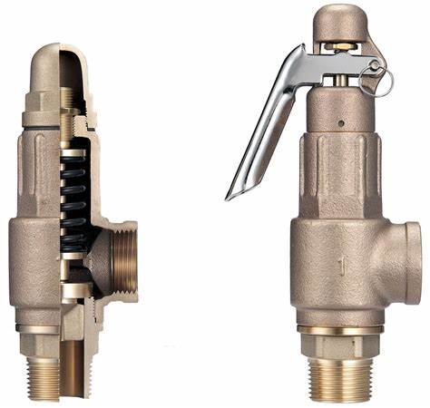

Safety valves are used to release excess pressure from vessels and systems to prevent catastrophic failures and potential explosions. These valves are designed to release pressure in a controlled way. This can limit damage that can be caused by uncontrolled release of chemicals, steam and other substances and can reduce the potential for catastrophic explosions in the working environment.
Safety valves should be installed wherever the maximum allowable working pressure of a system or pressure containing vessel is likely to be exceeded, in particular under fault conditions due to the failure of another piece of equipment in the system.